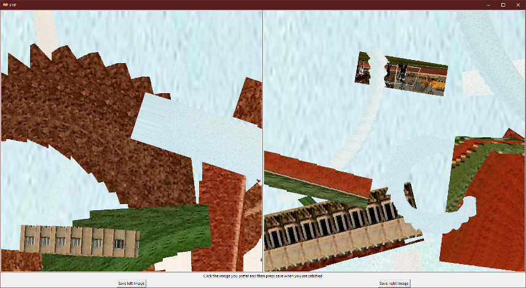
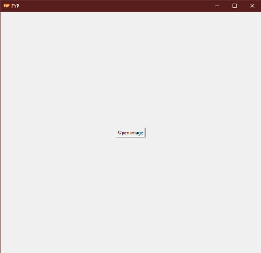
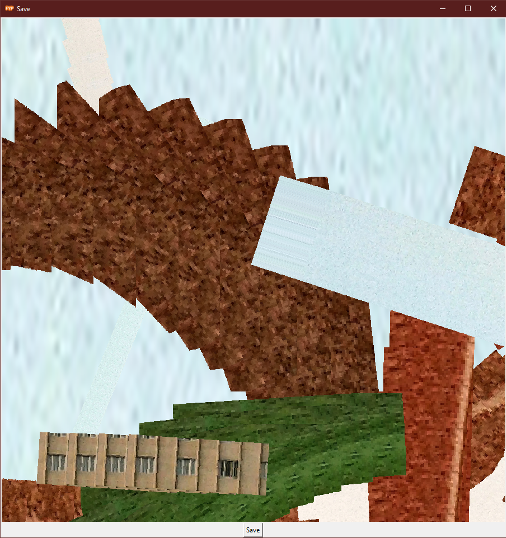

What it does
My final year project at university challenged me to create something that mixed computer intelligence and the world of art.
The program I created takes an image supplied by the user and then produces two patterns. The user selects which pattern they prefer and the program will use that choice to return two entirely new patterns. This process can continue infinitely until the user is satisfied with the final pattern.
Screenshots
  My Favourite Patterns